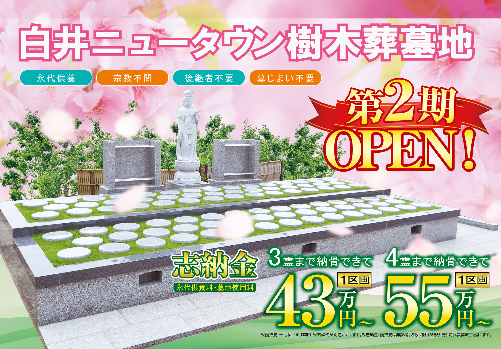
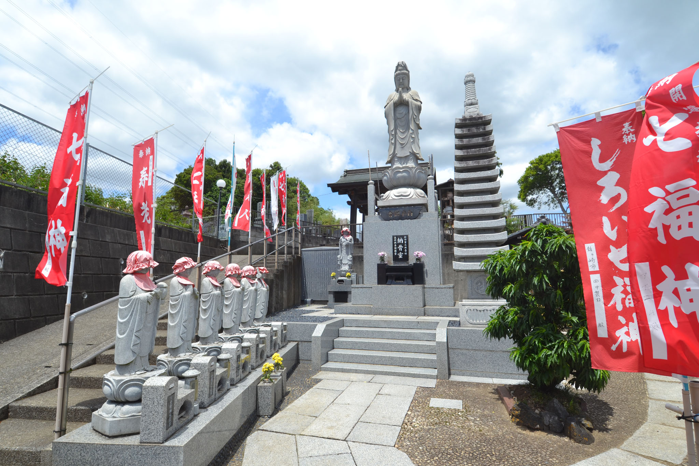
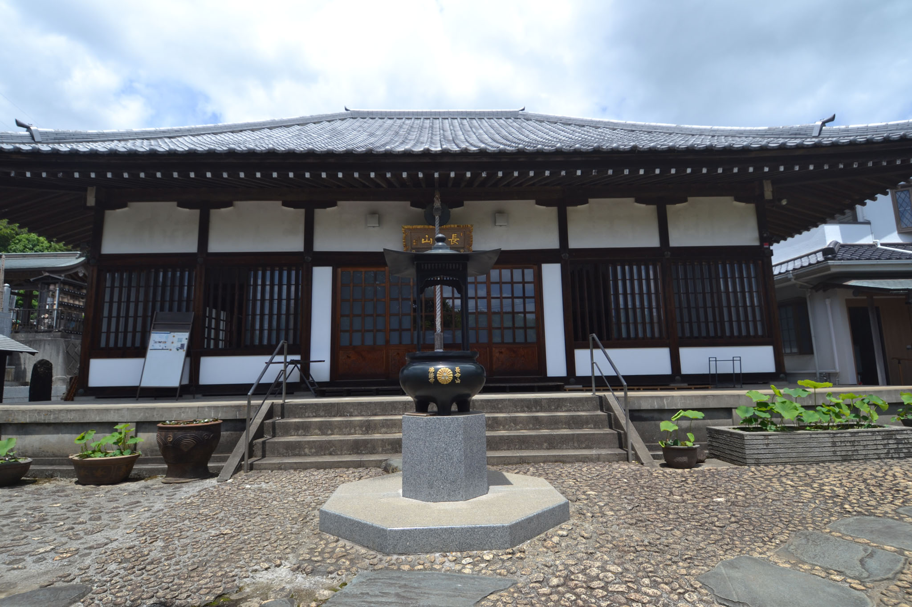
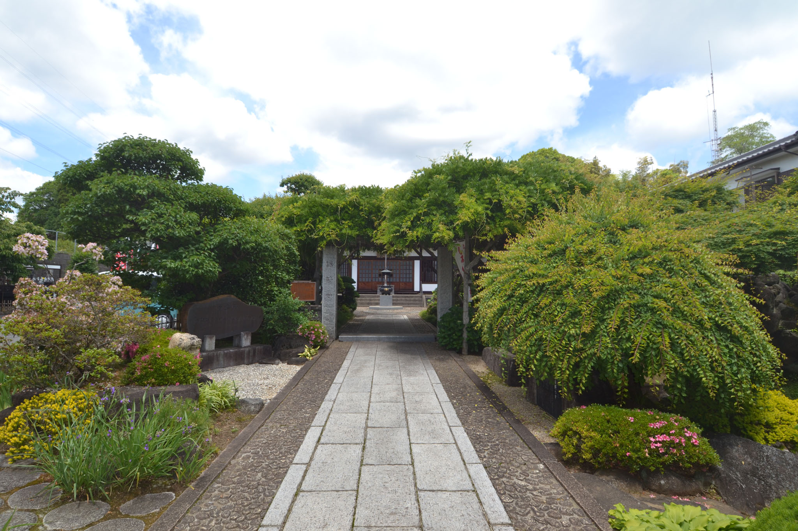
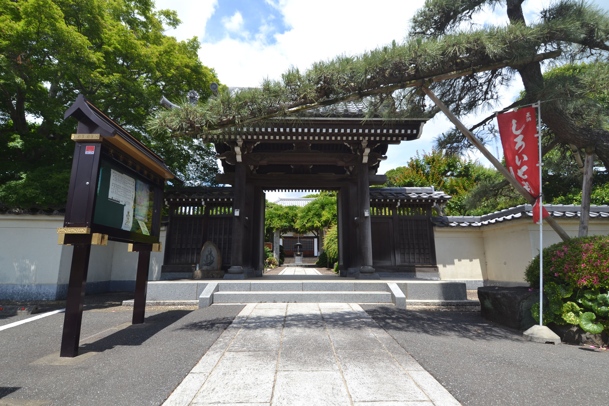
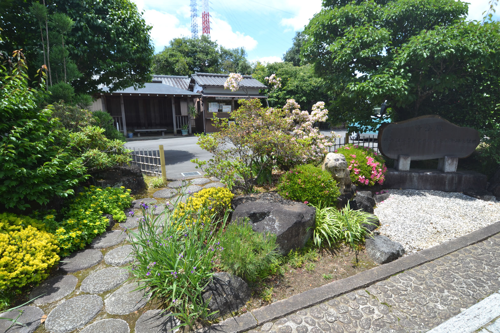
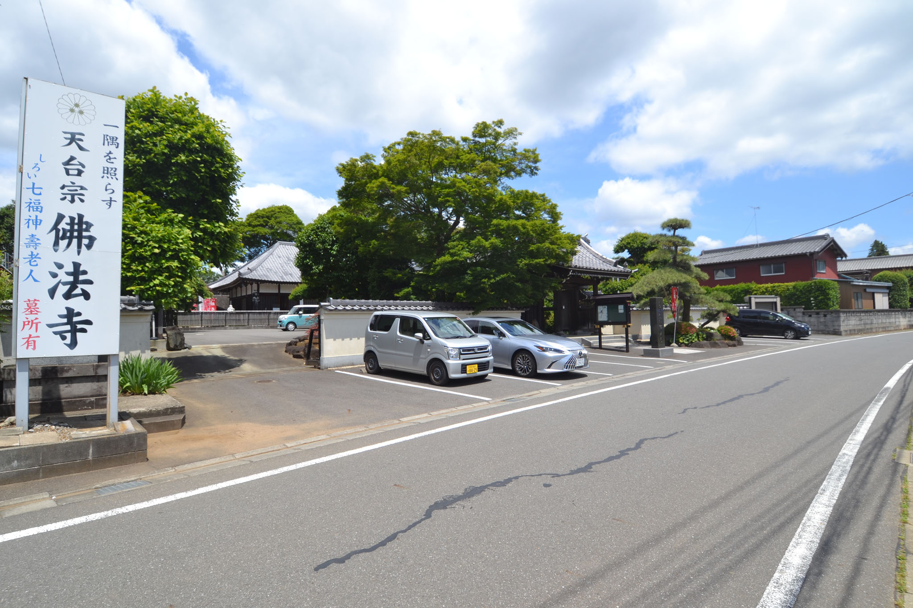
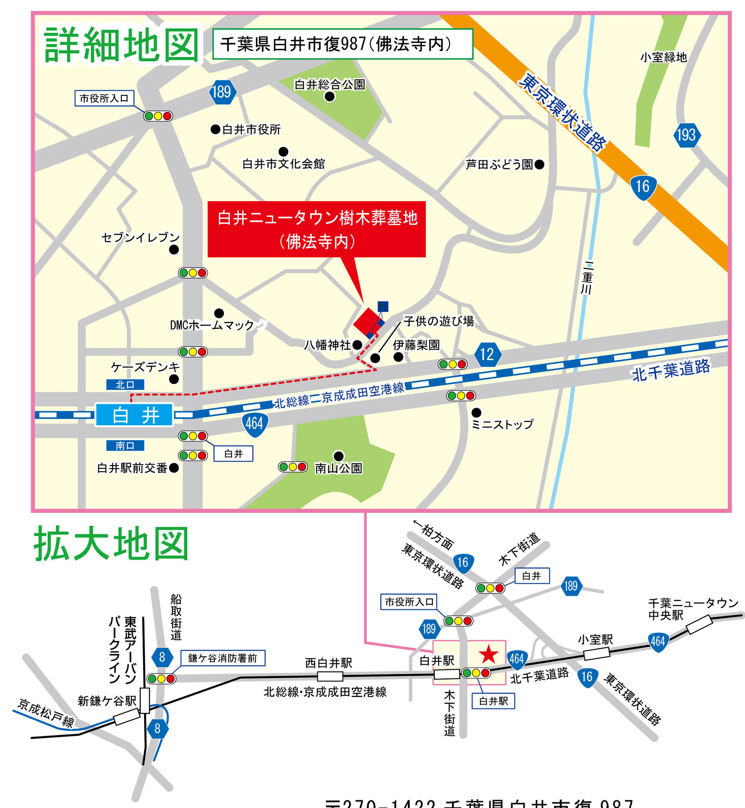

受付時間 10:00〜16:00 (火・水曜定休)
北総線「白井駅」から徒歩約10分
お墓の後継ぎ、費用、これからの供養の形。現代のご家族が抱えるお悩みに寄り添い、佛法寺が安心の樹木葬をご提案いたします。
過去の宗旨宗派は問わず、どなたでもお申込みいただけます。在来仏教、キリスト教、無宗教の方、どのような信条の方でも優しくお迎えいたします。
身寄りがない、あるいは子どもに経済的・心理的な負担をかけたくないという方も安心。寺院が責任を持って永代にわたり責任管理・供養いたします。
境内には樹齢300年を超える名物「白梅」や、四季折々の美しい草花が息づきます。お参りに訪れるたび、心癒される穏やかで静謐な時間が流れます。
家族の一員である大切なペットと一緒に埋葬できる「ペット共葬区画」を設けております。死後も同じ安息の地で過ごしたいという強い想いにお応えします。
志納金43万円（3霊まで・非課税）から。別途護持費一括払い70,000円(非課税)。石碑代は別途となります。年間管理料の追加徴収や寄付金要請などは一切なく、初期費用にすべてを含んだ透明性の高い価格設計を誇ります。
最寄り駅「白井駅」から平坦な道を歩いてすぐ。いつでも思い立った時に気軽にお参りに来られる利便性の良さは、長く通い続けるお墓選びに不可欠なポイントです。
お眠りになる人数やご要望、ペットの有無に合わせて最適なプランをお選びいただけます。すべてのプランで永代供養・40年間個別埋葬(お申込時より)となります。
鎌倉時代より続く歴史が刻まれた本堂、丹精込めて整えられた美しい境内、そして安心してお越しいただける設備をご案内します。






個別期間（ご契約年数）終了後も、寺院墓地内の永代供養塔に合祀し、佛法寺住職が永代にわたって毎日読経・回向を行います。後継者がおられなくなっても、無縁仏になる恐れはございません。
どのような宗派の方でも広く受け入れておりますが、供養を執り行うのは佛法寺住職（天台宗）となります。天台宗の由緒正しい格式と作法に則り、非常に荘厳で静謐なご供養をお約束いたします。
お墓を維持するために徴収される「寺院護持会費」はご契約時にすべて一括でお支払いただく形ですので、未来の子孫、あるいは遺言執行者に経済的な負担を残すことがありません。
「遠方にあるため高齢でお墓参りに行けない」「田舎のお墓を管理する人がいなくなる」 こういった理由で、近年多くの方が墓じまいや改葬（お墓の引っ越し）を選択しています。
※改葬に関係するややこしい書類の書き方や手続きの順序についても、現地の係員・寺院スタッフが分かりやすくサポートさせていただきます。まずは無料見学時にご相談ください。
長命山佛性院佛法寺（ちょうめいさん ぶっしょういん ぶっぽうじ） 佛法寺は、開基が鎌倉時代と伝えられている歴史深い天台宗の由緒正しいお寺です。 ご本尊である木造阿弥陀如来坐像・両脇侍立像は、なんと13世紀中頃（鎌倉時代中期）に作られた極めて貴重な歴史物です。
江戸時代には、人々が集まる本堂が「寺子屋」として使用され、教育と教えの普及に大きく貢献したと言われています。今も境内に残されている筆子塔（ふでことう）が、当時の子供たちと地域の人々のつながりを物語ります。
現住職は脈々と引き継がれる教えを護る「第37世」。5代前の住職であった栄海大僧正は、當山のほか、あの高名な上野の寛永寺や浅草の浅草寺の住職も務めた、仏教界にその名を刻む高僧でした。
平成10年には、現代の聖地としての姿を美しく保つために山門を再建し、境内を大整備。春になると、樹齢300年を超える白梅が息を呑むような見事な華を咲かせます。また、平成21年にはご本尊が白井市の指定重要有形文化財に正式に登録されました。
お参りに行くだけで心が落ち着く、地元に愛され続ける確かな寺院格があります。
千葉県白井市復987（佛法寺内）。白井ニュータウンエリアから抜群のアクセス。現地駐車場も完備しております。
北総鉄道北総線「白井駅」から徒歩で約10分。なだらかな平坦な道のりで、足の不自由な方も安心です。
国道16号・千葉ニュータウン・白井エリアからアクセス抜群。駐車場をご用意しておりますので直接お入りください。
〒270-1422 千葉県白井市復987 (佛法寺 境内地内)
※スマートフォンのマップアプリで行き方を検索する場合、下記ボタンよりすぐにGoogleマップナビを起動できます。
Googleマップルート案内
受付時間：10:00〜16:00 (火曜・水曜日定休)